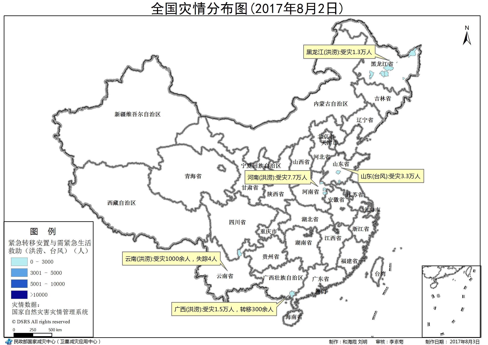
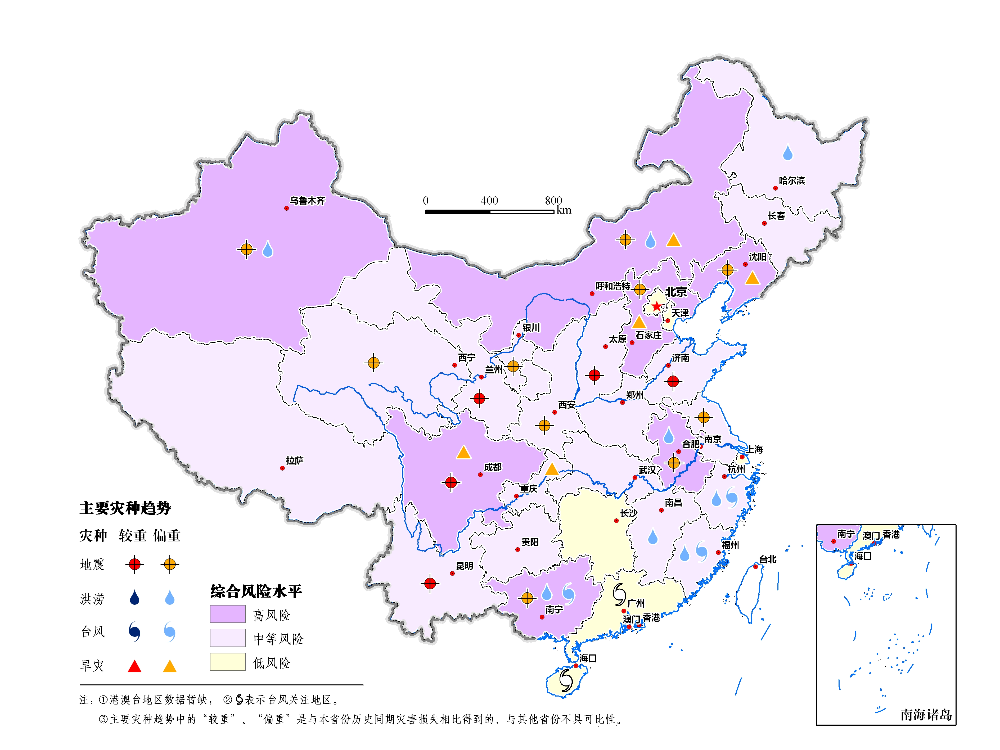
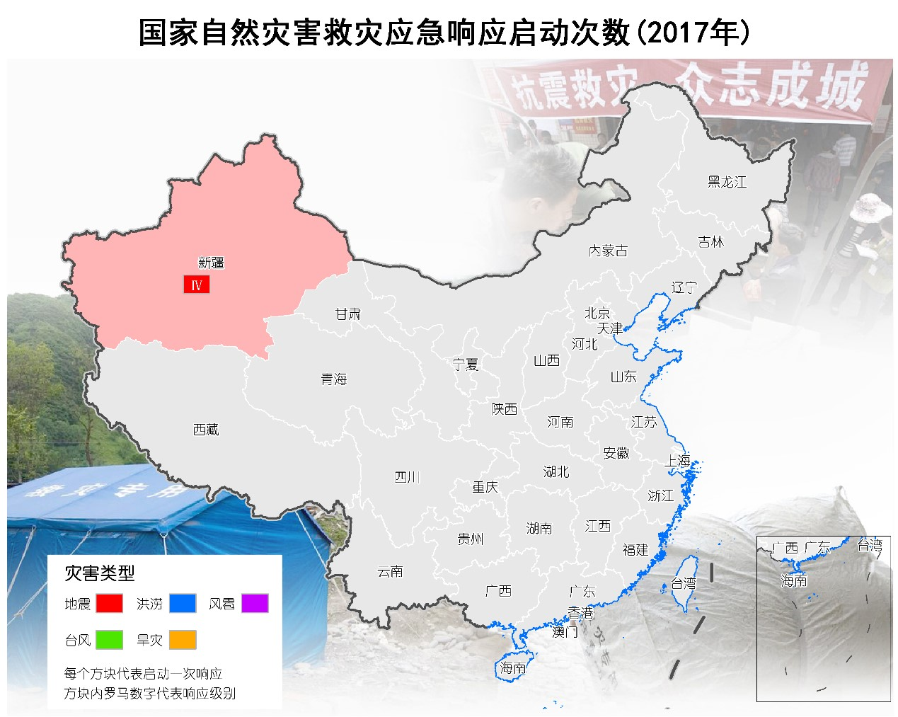
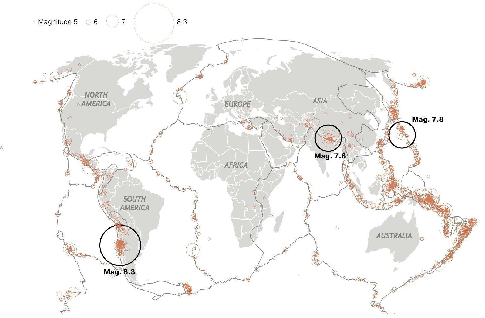
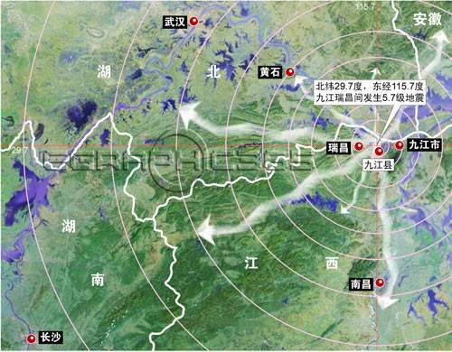

截至8月10日，今年以来我国大陆地区共发生4.0级以上地震共计47次，其中5.0级以上地震6次，6.0-7.0级地震1次（8月9日新疆精河6.6级地震）、7.0级以上地震1次（8月8日四川九寨沟7.0级地震）。
标题
震级
发震时刻[UTV+8]
纬度[°]
经度[°]
深度[km]
参考位置
5.0
2017-05-25 09:27:05
15:21
120.32
60
重庆
5.5
2017-05-20 08:27:05
32.01
116.20
60
云南
5.0
2017-04-25 13:27:05
25:24
140.32
60
四川





4~5级
41
次
5~6级
4
次
6~7级
1
次
7级以上
1
次